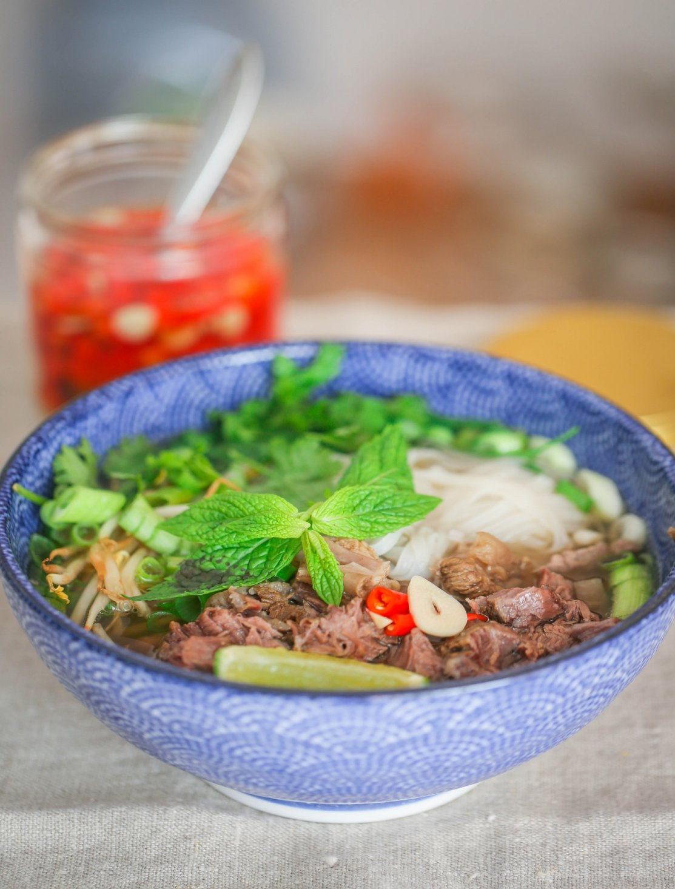

Этот суп стал символом Вьетнама. Рецепт в общем-то простой, но есть в нем и интересные моменты – например, обжаривание овощей перед добавлением бульона, типичный прием французской кухни. Из всех азиатских супов фо бо самый простой в смысле поиска ингредиентов. Единственная сложность – найти именно китайский черный кардамон, который используется в ханойском варианте супа. Вообще с фо бо как с борщом – версий много и играть с ним можно бесконечно.
Главное – понять смысл фо бо. Этот суп про наслоение и идеальное сочетание вкусов: в нем густота от желатина из костей, сладость, кислинка, умами, соленость, острота, пряность. Фо бо готовить не сложно, но довольно долго, поэтому лучше разделить процесс на два этапа: с вечера сварить бульон, а собирать и подавать на следующий день.